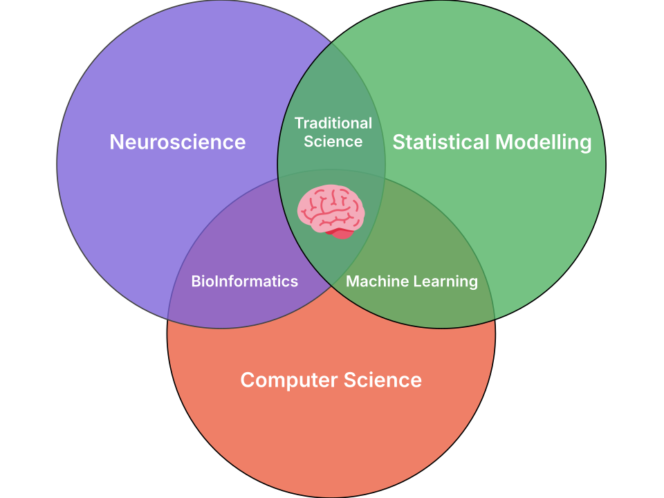
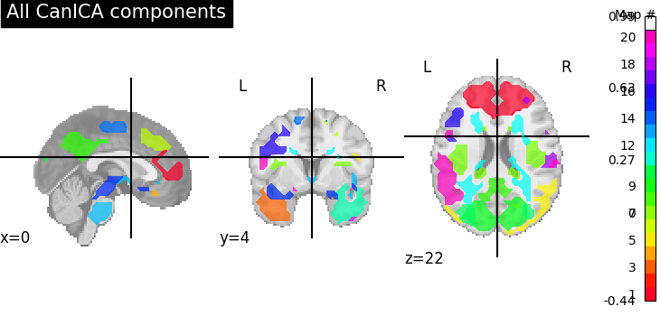
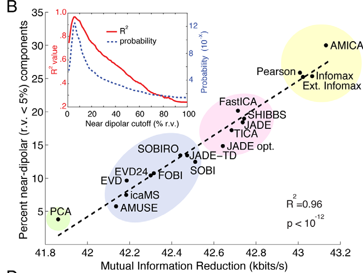
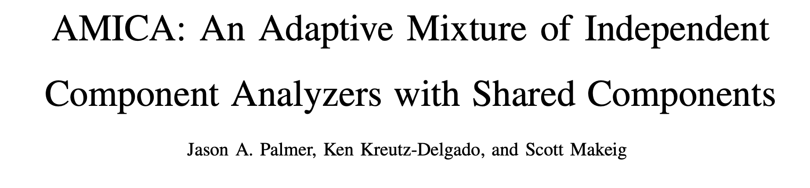
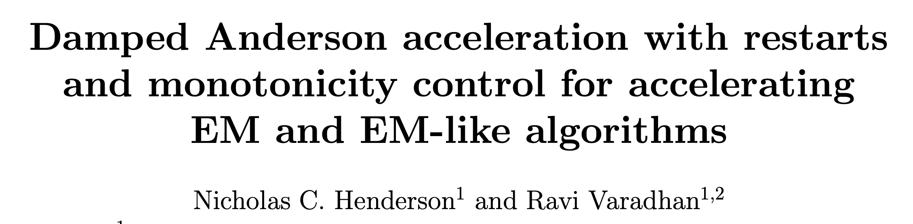
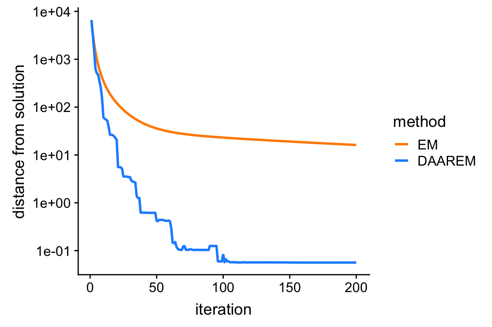
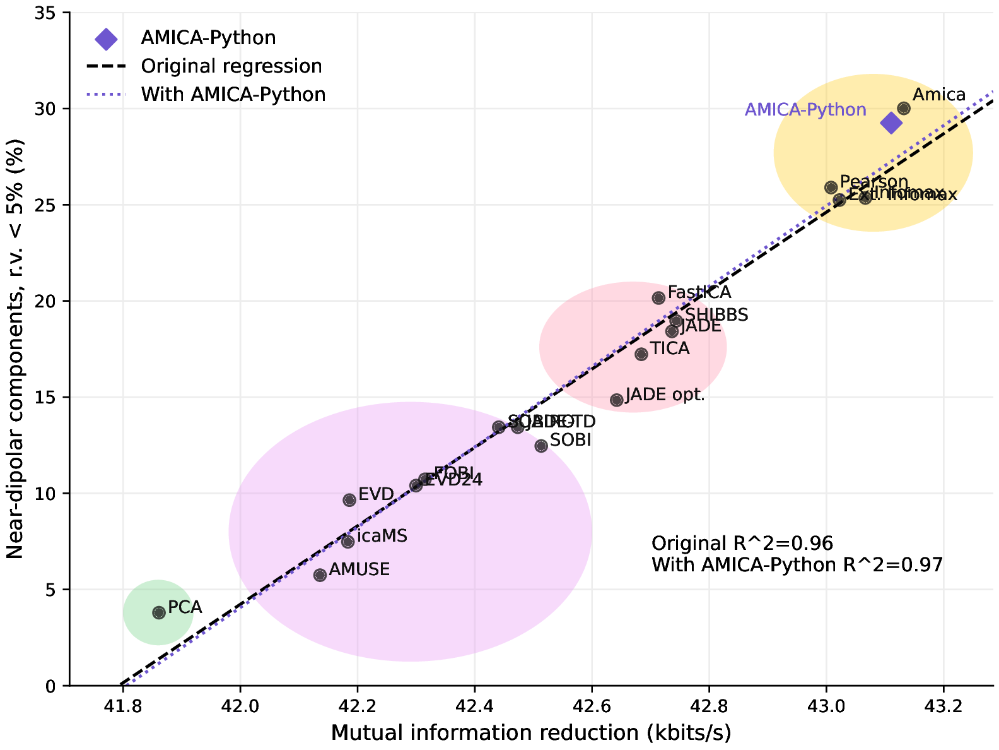
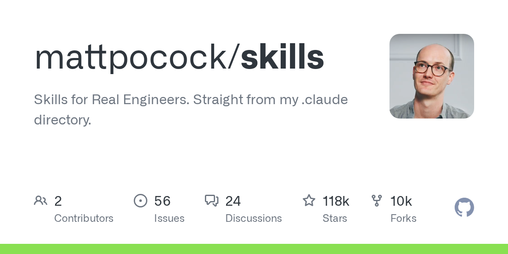
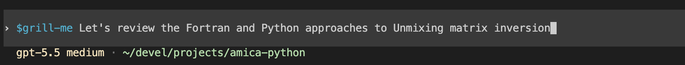
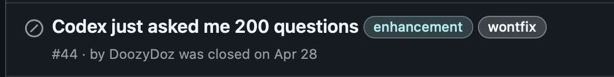

Accelerating research while maintaining rigor
University of Southern California
2026-06-05
PhD: Neuroscience, McGillCurrent: Postdoctoral researcher, USC
modern_research = "domain-knowledge" + "statistics" + "computation"

amica-python.FrameGatherImplementReviewCapture
source separationIndependent Components Analysis is used to:


I use mathpix to convert scientific PDFs into Markdown and LaTeX that an LLM agent can inspect.
amica-python/
├── .codex/
│ ├── config.toml
│ └── hooks.json
├── AGENTS.md
├── src/
│ ├── core.py
│ └── utils.py
├── data/
│ ├── raw_data.set
│ └── clean_data.set
├── fortran/
│ ├── amica15.f90
│ └── amica15_header.f90
├── papers/
│ ├── Palmer-2011-amica.md
│ └── Palmer-2006-newton.md
└── output/
├── report.html
└── report.pdfdoes it work?

amica-python/
├── .codex/
│ ├── config.toml
│ └── hooks.json
├── AGENTS.md
├── src/
│ ├── core.py
│ ├── utils.py
│ └── tests/
│ └── test_daarem.py
├── data/
│ ├── raw_data.set
│ └── clean_data.set
├── fortran/
│ ├── amica15.f90
│ ├── amica15_header.f90
│ └── daarem.R
├── papers/
│ ├── daarem.md
│ ├── Palmer-2011-amica.md
│ └── Palmer-2006-newton.md
└── output/
├── report.html
└── report.pdfOriginal AMICA result
AMICA-Python reproduction

Package managers: point the agent to conda, uv, or project-specific toolsLinters: Ruff, Codespell, tyTests: run focused checks after file edits{
"hooks": {
"SessionStart": [
{
"matcher": "startup|resume",
"hooks": [
{
"type": "command",
"command": "bash -c 'source /Users/scotterik/miniforge3/etc/profile.d/conda.sh && conda activate mnedev_311'",
"statusMessage": "Activating Conda Environment"
}
]
}
],
"PostToolUse": [
{
"matcher": "^(apply_patch|functions\\.apply_patch)$",
"hooks": [
{
"type": "command",
"command": "/Users/scotterik/miniforge3/envs/mnedev_311/bin/ruff check",
"timeout": 30,
"statusMessage": "Running Ruff linter"
}
]
}
]
}
}

mattpocock/skills ecosystem
grill-me-with-docs/to-issues
/tdd
/diagnose
Plan mode
Frame the problem and approach.
→
Context
Codebases, papers, MCPs, environments, tools.
Implementation loop
Define task
Patch
Human review
Commit
Grill-me review
Stress-test assumptions and decisions.
→
Optional: to-issues
Create tasks for future work.
Context: keeps source material close to the workAlignment: clarifies the problem, goal, and scopeImplementation: creates tests that must passVersion control: preserves reproducibility and reversibilitysandcastle for multi-agent orchestrationAI-Assisted Science